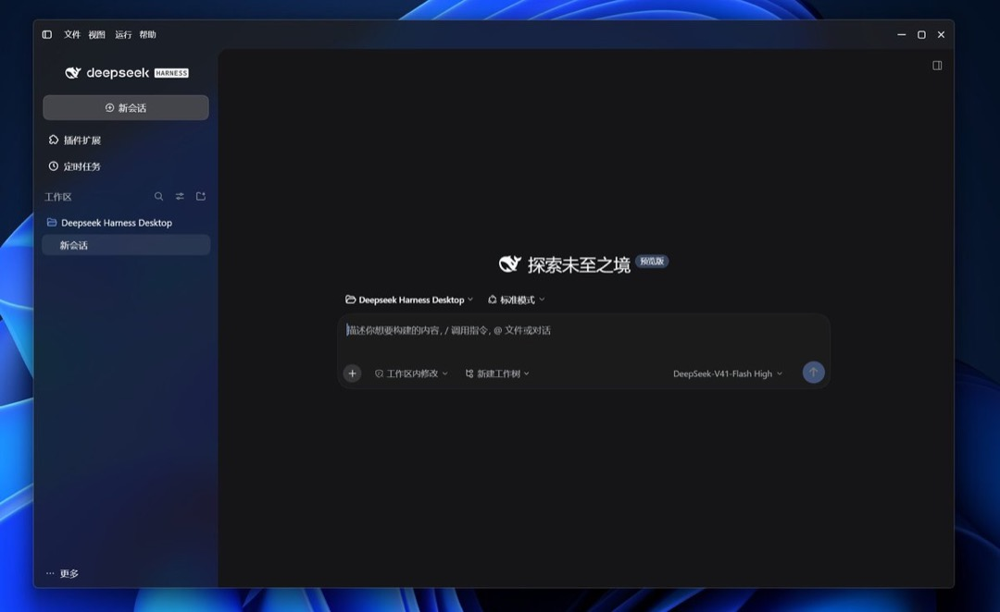
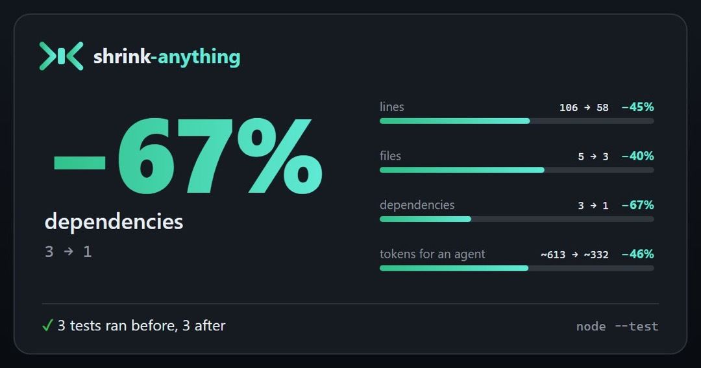
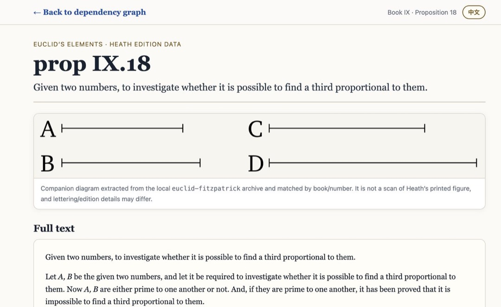
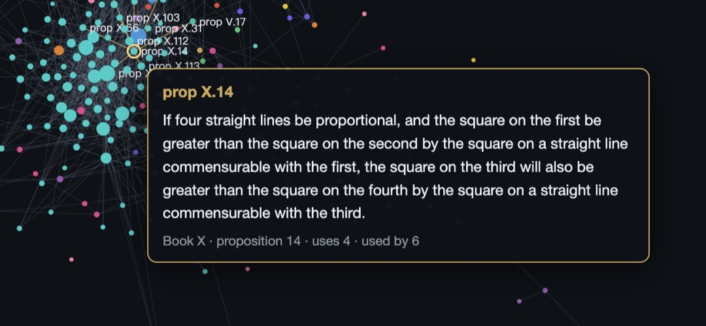
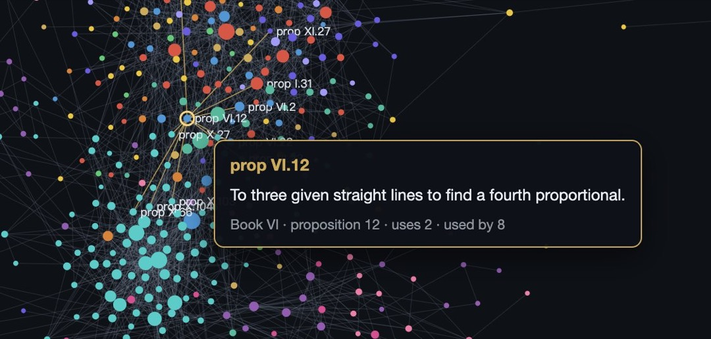

本期速览
01 Grok Build 全平台支持对话内建应用
02 Claude 通过自定义连接器接入 WhatsApp
03 DeepSeek Harness 获免配置桌面封装
05 TalyxTerminal 开源本地量化金融终端
09 shrink-anything 跨 19 语言清理死代码
01｜Grok Build 全平台支持对话内建应用
来源（X） · @grok · 2026-09-25 20:04
中文译文
告诉 Grok 一个想法，它就会在你的聊天中实时构建出一个可用的版本。
Grok Build 现已在所有套餐中提供——网页、iOS 和 Android。
原文
Tell Grok an idea, and it builds a working version live in your chat.
Grok Build is now available on every plan - on web, iOS, and Android.
02｜Claude 通过自定义连接器接入 WhatsApp
来源（X） · @ITentser · 2026-11-13 23:34
中文译文
将 WhatsApp 作为自定义连接器添加到 Claude。
一个 URL、OAuth 登录、无需 API 密钥。然后 Claude 就可以读取你团队真实的 WhatsApp 聊天、总结对话串，并起草由你批准的回复。
5 分钟即可完成设置。
原文
Add WhatsApp to Claude as a custom connector.
One URL, OAuth sign-in, no API keys. Then Claude can read your team's real WhatsApp chats, summarise threads and draft replies you approve.
5-minute setup.
03｜DeepSeek Harness 获免配置桌面封装
来源（X） · @QingQ77 · 2026-11-28 14:24
https://github.com/dsh-tauri/deepseek-harness-desktop

04｜Shotbox 本机 OCR 截图支持关键词检索
来源（X） · @appinn · 2026-11-28 14:03
【开发者自荐】Shotbox：截图后在本机识别文字，记得一个词就能搜回那张图
https://meta.appinn.net/t/topic/97121
05｜TalyxTerminal 开源本地量化金融终端
来源（X） · @_zheergen · 2026-11-28 13:46
TalyxTerminal，整合了 Lightweight Charts、NautilusTrader、Qlib 和 PyneCore 等开源项目。
最有意思的是，它的指标可以直接用 Python 编写，连 PyTorch 训练的机器学习模型都能画到 K 线图上！
核心亮点：
1️⃣ 专业行情图表：内置数十种技术指标、十余种图表类型，支持最多 8 张 K 线联动、历史回放和行情预警。
2️⃣ Python 指标开发：支持 scikit-learn、PyTorch，直接将机器学习模型接入图表。
3️⃣ 多因子研究：支持自定义因子、IC 分析、分组收益、换手率和 Walk-Forward 模型验证。
4️⃣ 专业量化回测：基于 NautilusTrader 引擎，考虑手续费、价差、市场冲击、借券和资金费率。
5️⃣ AI Agent + MCP：让 AI 获取行情、编写指标、运行回测，还能设置定时研究任务和触发式预警。
6️⃣ 多市场数据：覆盖 A 股、港美股、指数和 Crypto，支持免费数据源与本地离线存储。
我比较看重它的模块化架构，新增一个行情数据源，图表、量化研究和 AI Agent 就能共同调用，不需要重复开发。
整个系统免费开源，数据保存在本地。
做 TradingView 图表开发、AI 量化、机器学习选股，或者想搭建个人金融终端的，这个项目值得收藏！
GitHub：
https://github.com/TalyxTerminal/TalyxTerminal
引用内容
爱吃折耳根的Ace @_zheergen
从 2020 年股灾到 2022 年熊市，再到 2026 年行情，连宏观风控、多空辩论和收益排行榜都安排上了！
risk-aware-trading-agents，一套基于多智能体的 AI 股票交易与风险管理框架。
它不只是让 AI 分析股票，而是把新闻、宏观数据、交易决策和仓位管理串成一套可回测的交易系统。
核心亮点：
1️⃣ AI 交易竞技场：让不同大模型在相同历史行情下交易，对比收益率、最大回撤和风险表现。
2️⃣ 防未来函数：按照新闻真实发布时间回放，订单在下一次开盘成交。
3️⃣ 宏观风险引擎：结合 VIX、FOMC、CPI 和非农数据，动态识别市场风险状态。
4️⃣ 多 Agent 辩论：多头寻找上涨逻辑，空头分析潜在风险，再由裁决 Agent 综合判断。
5️⃣ 动态仓位管理：默认保留至少 30% 的现金及短期国债资产，控制个股仓位和行业风险敞口。
6️⃣ MCP + 交易执行：支持 Claude、Codex、Gemini，提供模拟交易及 10 家券商接入方案。
比较有意思的是，作者公布的 2026 年样本外测试中，Claude Haiku 4.5 以 7.2% 的收益领先其他参测模型，却依然跑输了 SPY 的 12.1%！
这种敢于公开 AI 跑输市场的回测项目，反而更值得研究。
支持中文界面、Docker 本地部署。
做美股量化、AI Agent、宏观交易或大模型交易研究的，这套源码值得收藏！
GitHub：
https://github.com/jackson-cmd/risk-aware-trading-agents
06｜系统设计开源仓库获五千星
来源（X） · @javarevisited · 2026-11-28 13:36
中文译文
几周前我创建了一个 GitHub 仓库来帮助你学习系统设计。
它在 GitHub 上获得了 5000+ 星标。
我添加了许多案例研究，让你能轻松找到重要信息。
它为你提供：
- 系统设计面试技巧
- 系统设计基础
- 配有可视化图表的简化工程案例研究
- 对真实世界架构的深入剖析
我的目标是打造互联网上的系统设计首页。
所以我会添加更多案例研究和额外板块。
随着时间的推移，你将在这个仓库中获得系统设计所需的一切
repo - https://github.com/javabuddy/best-system-design-resources
原文
I have created a GitHub repository to help you learn system design weeks ago.
And it received 5000+ stars on GitHub.
I've added many case studies to make it easy for you to find important information.
It gives you:
- System design interview tips
- System design fundamentals
- Simplified engineering case studies with visuals
- Deep dives into real-world architecture
My goal is to create a system design front page on the internet.
So I'll add more case studies and extra sections.
And you'll get everything needed for system design in this repository over time
repo - https://github.com/javabuddy/best-system-design-resources
07｜Nango 开源统一千余 API 认证接入
来源（X） · @javarevisited · 2026-11-27 23:43
中文译文
最近试用了 Nango，用于将智能体连接到外部 API。
它是开源的，并处理了 1,000+ API 中那些繁琐的部分（OAuth、token 刷新、代理）。
基本上是 Composio 或 Pipedream 之类工具的开源替代品。
在这里查看 - https://github.com/NangoHQ/nango
原文
Tried Nango recently for connecting agents to external APIs.
It’s open source and handles the messy parts (OAuth, token refresh, proxying) across 1,000+ APIs.
Basically an open-source alternative to things like Composio or Pipedream.
check it here - https://github.com/NangoHQ/nango
08｜腾讯混元翻译插件支持本地离线模型
来源（X） · @hungryturbo · 2026-11-28 13:27
网页全译支持学术，商业等文风切换与 9 种双语样式，划词也是结合上下文来做的。
同时，它还支持一键安装本地小模型并适配 NPU 算力，离线断网也不耽误，核心数据绝不出本机，完美解决大厂与科研党看机密文档时候，不敢上云的合规痛点。
侧边栏支持艾特网页总结追问，还能一键直译截图，各种 PDF，Word，PPT 类型的文件也支持。
传送门：http://chromewebstore.google.com/detail/tencent-hy-translate-a-pe/plkeongecagdacbbldjkoaijdogfkhof
09｜shrink-anything 跨 19 语言清理死代码
来源（X） · @QingQ77 · 2026-11-28 13:22
https://github.com/EL4CTEO/shrink-anything
一款基于 Rust 编写的代码库精简 CLI、Claude Code 插件与 MCP 服务器，支持通过 npm 或 Cargo 安装。工具通过跨文件名称计数而非构建调用图，识别 Python、TypeScript、Rust、Go 等 19 种语言中的死代码、重复片段、未引用文件、多余依赖以及无用资源。

10｜欧几里得几何原本变交互依赖图
来源（X） · @marchliu · 2026-11-28 13:18
中文译文
📐 我把欧几里得的《几何原本》搬到了线上——全部 465 个命题以交互式依赖图呈现。
每一个证明都可追溯到公理。点击任何命题，就能看到它建立在什么之上，以及什么建立在它之上。
Heath 的经典版本
免费且开放：https://marchliu.github.io/euclid-site/
原文
📐 I put Euclid's Elements online — all 465 propositions as an interactive dependency graph.
Every proof traces back to the axioms. Click any proposition to see what it builds on, and what builds on it.
Heath's classic edition
Free & open: https://marchliu.github.io/euclid-site/


